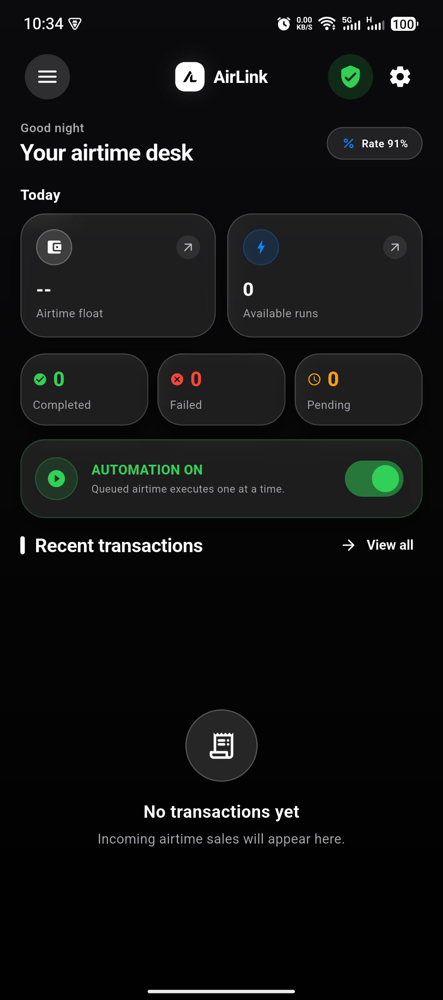

Payment to action
Use Till-to-Till or Number-to-Till confirmations to create an organised transaction record.
Android airtime operations
AirLink turns authorised M-PESA payment confirmations into clear airtime work: identify the client, calculate the airtime, and execute one protected carrier request at a time.
Android only. You control every merchant setting on your phone.
Use Till-to-Till or Number-to-Till confirmations to create an organised transaction record.
Carrier requests stay serialised, so a busy inbox does not turn into overlapping USSD sessions.
Review, retry, hold, mark done, or correct eligible transactions from their details.
A deliberate workflow
Keep Till and Number clients separate, store the right execution destination, and use an optional two- or three-way percentage split that always adds up to 100%.
Each execution has its own durable run record, so completed airtime is never sent again during a retry.
Automation requires a deliberate hold to change state. When it is off, new work stays held until you choose to retry it.
AirLink runs the execution queue natively on the Android device, uses your selected SIM and USSD settings, and shows the active transaction from the persistent automation notification.
Inside AirLink
Every screen is designed around a quick decision: what arrived, what will run, and what needs your attention.

Float, available runs, today’s activity, automation state, and recent transactions.
Configure the desk around your current rate, SIM choice, units, and execution method.
Start on today, then understand how the desk is moving over time.
A safer working rhythm
Get started
Download the latest AirLink Android update from the official release.
Download latest updateThe link opens the official GitHub release. Android may ask for your permission before installing an update.